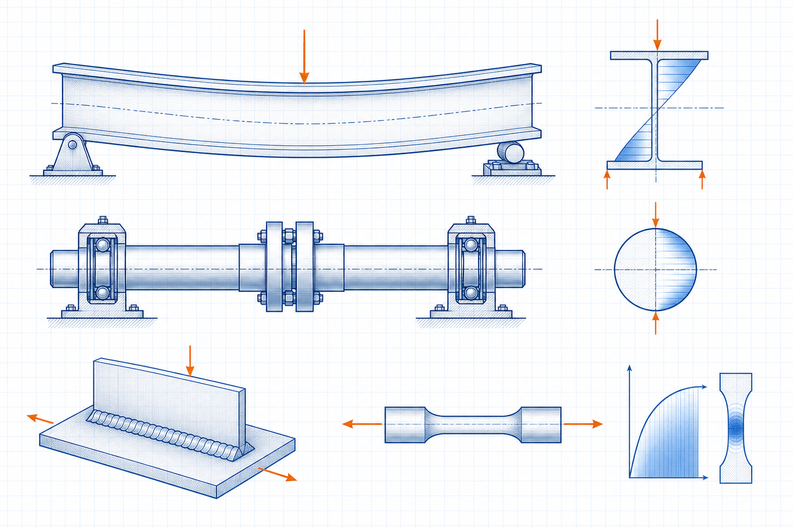

Fabrication engineering guide
Plate Development and Bending Allowance
Plate Development and Bending Allowance is a focused fabrication engineering guide within the Industrial Calculation Hub knowledge library. It explains the engineering purpose, physical basis, governing inputs, process or equipment interfaces, common failure mechanisms and the limits of preliminary use.

- Content type
- Fabrication engineering guide
- Canonical ID
- ICH-CAN-026
- Source basis
- Machine-design and fabrication literature
- Last reviewed
- 31 August 2026
What is Plate Development and Bending Allowance?
Plate development converts a finished three-dimensional sheet-metal or platework shape into a flat pattern. Bending allowance, bend deduction, neutral-axis position, material thickness, inside radius, forming method and springback determine whether the developed blank produces the required finished dimensions.
During a bend the inside material compresses and the outside stretches; a neutral axis lies between them. Bend allowance represents material length along that neutral axis, commonly using bend angle, inside radius, thickness and a K-factor. The K-factor is not a universal constant: tooling, material, grain direction and bend radius affect it, so production trials or qualified shop data are valuable.
Why this topic needs a component-level basis
Plate Development and Bending Allowance is not reliably assessed by a single catalogue value or by one convenient operating condition. Geometry, material condition, assembly, load path, operating history and failure consequence must be recorded together. The objective is a repeatable engineering decision, not an over-precise calculation based on uncertain inputs.
Terms used in the assessment
- Design case
- The combination of geometry, material, load, speed, temperature and support condition used for the check.
- Service condition
- The actual operating state, including starts, process upsets, maintenance condition and environmental exposure.
- Acceptance evidence
- Measurements, inspection records, calculations and traceable documents supporting a decision.
Mechanics and governing relationships
During a bend the inside material compresses and the outside stretches; a neutral axis lies between them. Bend allowance represents material length along that neutral axis, commonly using bend angle, inside radius, thickness and a K-factor. The K-factor is not a universal constant: tooling, material, grain direction and bend radius affect it, so production trials or qualified shop data are valuable.
Check 1
bend allowance is calculated from bend angle, inside radius, thickness and neutral-axis location
Check 2
K-factor expresses neutral-axis position as a fraction of thickness from the inside surface
Check 3
bend deduction relates outside dimensions to the developed length for a specified bend geometry
Check 4
springback must be allowed for when the formed angle must meet tolerance after unloading
Use consistent units and state the source of each property. Where cyclic loading, a weld detail, a keyway, a contact interface or a support flexibility is present, the gross-section result is only the start of the review.
Applying the relationships responsibly
Relationship 1 in practice. bend allowance is calculated from bend angle, inside radius, thickness and neutral-axis location. Before using it, define the section or component to which it applies, the load direction, material-temperature basis and whether the service is steady or cyclic. The relation is a check within the larger component model, not a replacement for the model.
Relationship 2 in practice. K-factor expresses neutral-axis position as a fraction of thickness from the inside surface. Before using it, define the section or component to which it applies, the load direction, material-temperature basis and whether the service is steady or cyclic. The relation is a check within the larger component model, not a replacement for the model.
Relationship 3 in practice. bend deduction relates outside dimensions to the developed length for a specified bend geometry. Before using it, define the section or component to which it applies, the load direction, material-temperature basis and whether the service is steady or cyclic. The relation is a check within the larger component model, not a replacement for the model.
Relationship 4 in practice. springback must be allowed for when the formed angle must meet tolerance after unloading. Before using it, define the section or component to which it applies, the load direction, material-temperature basis and whether the service is steady or cyclic. The relation is a check within the larger component model, not a replacement for the model.
Information required before calculation or selection
- finished inside or outside dimensions and clear dimensioning convention
- material grade, thickness, temper, grain direction and coating
- inside bend radius, tooling, forming method and bend sequence
- holes, slots, hems, seams and weld allowances
- required tolerances, inspection datums and assembly interfaces
Photographs can help confirm an installation, but they do not establish dimensions, material grade, preload, runout, stiffness or load spectrum. Obtain records and measurements that identify the actual component condition.
Practical design and verification method
- Review 1. keep the dimensioning scheme consistent throughout the drawing and development
- Review 2. use bend radii that suit material ductility and tooling capacity
- Review 3. locate holes away from bend zones or form them with a defined sequence
- Review 4. include trim, weld shrinkage and rolling allowance where applicable
- Review 5. validate new material/tool combinations with a representative first article
Recheck the component following manufacture, installation or operating change. Record the measurement position, instrument, temperature, speed or load condition and the acceptance criterion so the next inspection can be compared with a defensible baseline.
How design intent becomes a controlled installation
Control point 1. keep the dimensioning scheme consistent throughout the drawing and development. Assign the responsible discipline and inspection stage, then retain evidence that the as-built or as-installed condition satisfies the stated requirement. This avoids relying on a design intent that was not transferred to manufacture or maintenance.
Control point 2. use bend radii that suit material ductility and tooling capacity. Assign the responsible discipline and inspection stage, then retain evidence that the as-built or as-installed condition satisfies the stated requirement. This avoids relying on a design intent that was not transferred to manufacture or maintenance.
Control point 3. locate holes away from bend zones or form them with a defined sequence. Assign the responsible discipline and inspection stage, then retain evidence that the as-built or as-installed condition satisfies the stated requirement. This avoids relying on a design intent that was not transferred to manufacture or maintenance.
Control point 4. include trim, weld shrinkage and rolling allowance where applicable. Assign the responsible discipline and inspection stage, then retain evidence that the as-built or as-installed condition satisfies the stated requirement. This avoids relying on a design intent that was not transferred to manufacture or maintenance.
Control point 5. validate new material/tool combinations with a representative first article. Assign the responsible discipline and inspection stage, then retain evidence that the as-built or as-installed condition satisfies the stated requirement. This avoids relying on a design intent that was not transferred to manufacture or maintenance.
Example engineering review
A hopper transition made from thick plate may need separate development for each folded panel and allowance for weld shrinkage at the corners. Treating it like thin sheet metal can produce an opening that is correct on paper but cannot be fitted to the outlet flange.
The example illustrates why replacement of a failed component alone is rarely sufficient. The review should identify the initiating mechanism, the feature that concentrated the response, the evidence that confirms it and the design or operating change that prevents recurrence.
Where it is used
Plate Development and Bending Allowance is relevant to ducting, hoppers, chutes, guards, enclosures, tanks, transition pieces and fabricated sheet-metal components. The same mechanics may apply in other industries, but material properties, environmental exposure, inspection rules and acceptable consequence of failure remain project-specific.
Common failure routes and warning signs
- using an assumed K-factor without shop confirmation can create systematic length error
- inside radius smaller than material capability can crack the bend
- grain direction changes bend behaviour and surface cracking risk
- a flat-pattern correction at one bend can shift the fit of an assembled multi-bend part
Failure route 1
using an assumed K-factor without shop confirmation can create systematic length error. Treat this as a reason to inspect the underlying load path or duty before changing a part.
Failure route 2
inside radius smaller than material capability can crack the bend. Treat this as a reason to inspect the underlying load path or duty before changing a part.
Failure route 3
grain direction changes bend behaviour and surface cracking risk. Treat this as a reason to inspect the underlying load path or duty before changing a part.
Failure route 4
a flat-pattern correction at one bend can shift the fit of an assembled multi-bend part. Treat this as a reason to inspect the underlying load path or duty before changing a part.
Trend information that is physically connected to the mechanism: torque, temperature, vibration, displacement, strain, leakage, bolt elongation, oil condition or crack indication. A measurement with a known location and operating state is more useful than a single visual judgement.
Inspection, maintenance and change control
Before altering Plate Development and Bending Allowance, confirm isolation, stored energy, lifting, access, hot-work, guarding and process hazards. A modification to material, geometry, coating, lubrication, tightening method, speed, load, support, control logic or operating cycle can change the basis of the original assessment. Update the drawing, maintenance record and test result together.
Acceptance and reassessment record
1. Evidence item. Record finished inside or outside dimensions and clear dimensioning convention. It should be tied to the specific component and operating case, not copied from a nominal data sheet. This evidence changes the confidence in the final decision.
2. Evidence item. Record material grade, thickness, temper, grain direction and coating. It should be tied to the specific component and operating case, not copied from a nominal data sheet. This evidence changes the confidence in the final decision.
3. Evidence item. Record inside bend radius, tooling, forming method and bend sequence. It should be tied to the specific component and operating case, not copied from a nominal data sheet. This evidence changes the confidence in the final decision.
4. Evidence item. Record holes, slots, hems, seams and weld allowances. It should be tied to the specific component and operating case, not copied from a nominal data sheet. This evidence changes the confidence in the final decision.
5. Evidence item. Record required tolerances, inspection datums and assembly interfaces. It should be tied to the specific component and operating case, not copied from a nominal data sheet. This evidence changes the confidence in the final decision.
Questions for the release review
Does the final condition match the documented geometry and material? Has the governing transient or fatigue case been included? Can inspection find the credible initiation location? Are the acceptance values measured under the conditions assumed by the design? If any answer is uncertain, state the limitation and assign the next action rather than declaring the component fully verified.
Frequently Asked Questions
Is K-factor the same for every bend?
No. It depends on material, thickness, radius, tooling and forming method; established shop data or trials are preferable to a generic value.
Which inputs should be confirmed for Plate Development and Bending Allowance?
Information required before calculation or selection finished inside or outside dimensions and clear dimensioning convention material grade, thickness, temper, grain direction and coating inside bend radius, tooling, forming method and bend sequence holes, slots, hems, seams and weld allowances required tolerances, inspection datums and assembly interfaces Photographs can help confirm an installation. Confirm the source, condition and measurement basis for each input before treating a calculated or selected value as reliable.
How should Plate Development and Bending Allowance be reviewed in practice?
Practical design and verification method Review 1. keep the dimensioning scheme consistent throughout the drawing and development Review 2. use bend radii that suit material ductility and tooling capacity Review 3. locate holes away from bend zones or form them with a defined sequence Review 4. include trim, weld shrinkage and rolling. Record the actual operating line-up and repeat the review at the condition most likely to challenge performance.
What warning signs deserve early attention?
Common failure routes and warning signs using an assumed K-factor without shop confirmation can create systematic length error inside radius smaller than material capability can crack the bend grain direction changes bend behaviour and surface cracking risk a flat-pattern correction at one bend can shift the fit of an assembled multi-bend part. A trend linked to the physical mechanism is more useful than waiting for a single visible failure.
What evidence supports acceptance?
Acceptance and reassessment record 1. Evidence item. Record finished inside or outside dimensions and clear dimensioning convention. It should be tied to the specific component and operating case, not copied from a nominal data sheet. This evidence changes the confidence in the final decision. 2. Evidence item. Record material grade, thickness, temper. Keep the records traceable so later maintenance or a process change can be compared with the original basis.
When should Plate Development and Bending Allowance be reassessed?
Reassess it after a change in duty, throughput, process material, temperature, pressure, geometry, maintenance condition, control logic or a recurring abnormal trend. The original result is valid only for the conditions it represented.
Can a typical value or handbook rule be used for final design?
Only as a preliminary screen. Final decisions for Plate Development and Bending Allowance need the actual component or system data, applicable standard, supplier limits and qualified engineering review.
Where should an engineering investigation begin?
Start by defining the system boundary and current operating condition, then compare measured evidence with the design intent. Address the controlling mechanism before changing capacity, setpoints or hardware.
References
- Mechanical Engineering Handbook. Supplied source library.
- Strength of Materials. Supplied source library.
Original educational summary informed by the supplied literature. It does not reproduce protected source text, figures, tables or standards material.